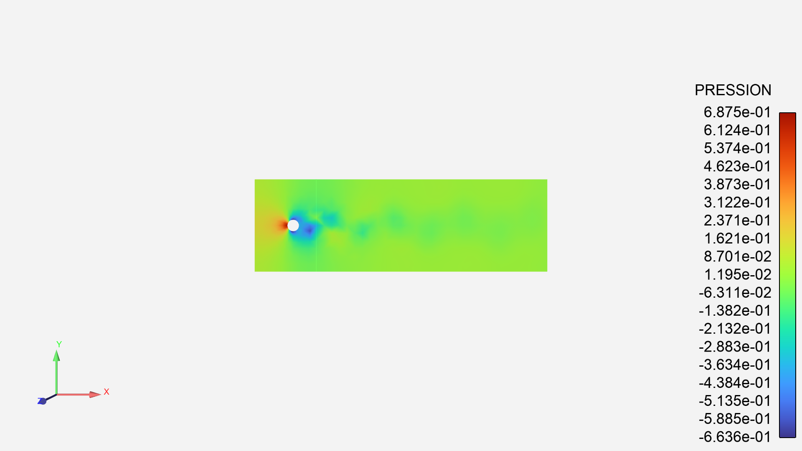
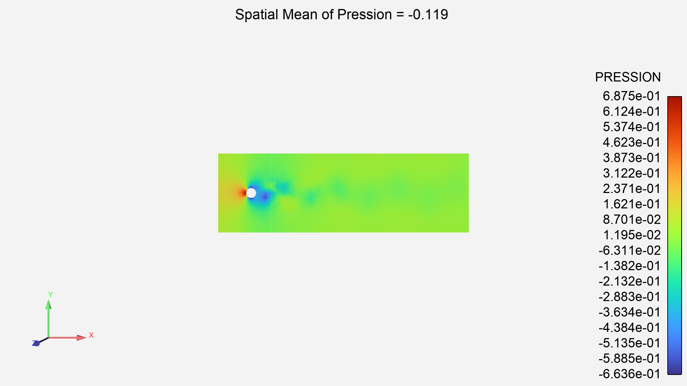
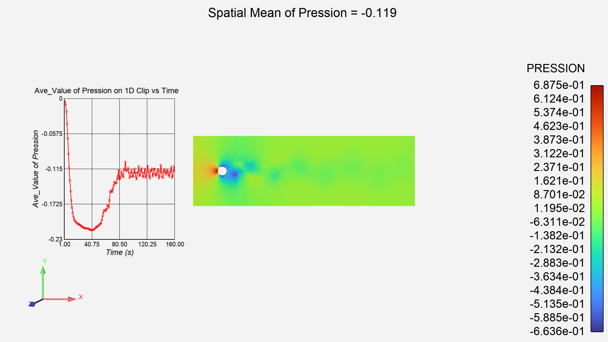

Note
Go to the end to download the full example code
Calculator usage#
Utilze EnSight Calculator to compute the Spatial Mean of a field variable. Display this constant value, and the create graph over time.
Start an EnSight session#
Launch and connect to an instance of EnSight. This example uses a local EnSight installation.
from ansys.pyensight.core import LocalLauncher
session = LocalLauncher().start()
# Setup shortcuts for long winded calls.
eocore = session.ensight.objs.core
eonums = session.ensight.objs.enums
eoutil = session.ensight.utils
Load a dataset#
Load transient data included in the EnSight installation and render
session.load_data(f"{session.cei_home}/ensight{session.cei_suffix}/data/flow2d/flow2d.case")
varname = eocore.VARIABLES["PRESSION"][0]
eocore.PARTS.set_attr("COLORBYPALETTE", varname)
session.show("image", width=800, height=600)
Create a clip plane#
Create a clip through the domain, at X = 8.0. We first call up the default clip part, set attributes, and then create the clip MESHPLANE sets the type of clip (e.g. X, Y, Z, R, T, Z, etc) TOOL sets the tool to create the clip from. VALUE is the location of the clip. DOMAIN controls intersection vs inside vs outside etc. Parent Part is named ‘Part by All Elements’
clip = eocore.DEFAULTPARTS[session.ensight.PART_CLIP_PLANE]
parent_parts = eocore.PARTS["Part by All Elements"][0]
attrs = []
attrs.append(["MESHPLANE", eonums.MESH_SLICE_X])
attrs.append(["TOOL", eonums.CT_XYZ])
attrs.append(["VALUE", 8.0])
attrs.append(["DOMAIN", eonums.CLIP_DOMAIN_INTER])
clip = clip.createpart(name="X_Clip", sources=[parent_parts], attributes=attrs)
session.show("image", width=800, height=600)
print("Parts:", eocore.PARTS)
Compute the Average Value of Pressure#
Use the calculator function SpaMean to compute the spatial mean of Pressure on the Clip part The Parent Part for this calculator function (source) is the Clip Part Object from above The ‘var’ variable object is the variable defined from that calculator function. Grab the constant value back out into Python to print()
var = eocore.create_variable(
"Ave_Value",
value="SpaMean(plist,PRESSION,[],Compute_Per_case)",
sources=[clip],
)
python_ave_value = var.MINMAX[0]
print("Python available value of Ave_Val = {}".format(python_ave_value))
Create an annotation of Ave_Value#
Create a text annotation, showing Ave_Value and place it near the top of the viewport in the center.
text_str = r"""Spatial Mean of Pression = <\\cnst C1 "%.3f" Ave_Value\\> """
text = eocore.DEFAULTANNOTS[session.ensight.ANNOT_TEXT].createannot(text_str)
text.setattrs(dict(LOCATIONX=0.5, LOCATIONY=0.95))
session.show("image", width=800, height=600)
Create an Graph of Ave_Value Over Time#
Create a query, showing Ave_Value over timestep. When querying a constant, you can choose min or max of the constant to obtain its value. The Parent Part_List for querying a Constant_Per_case can be any part list. Min time is 1; Max time is 160 seconds. There are 160 sample points in time.
mintime = 1.0
maxtime = 160.0
num_samples = 160
line_query = eoutil.query.create_temporal(
"Ave_Val vs. time",
query_type="min",
part_list=eocore.PARTS,
variable1="Ave_Value",
start_time=mintime,
end_time=maxtime,
num_samples=num_samples,
new_plotter=False,
)
Display the query on a plotter#
Queries can be shown on a “plotter”. The plotter defines a set of axes and various display features. This code creates a plotter is adds the query to this plotter. It then override many of the plotter visual features. For example, it sets the axes scaling explicitly, creates a background grid, and adjusts the display of the axis text.
line_plot = eocore.defaultplot[0].createplotter()
line_query.addtoplot(line_plot)
line_plot.rescale()
line_plot.PLOTTITLE = "Ave_Value of Pression on 1D Clip vs Time"
line_plot.AXISXTITLE = "Time (s)"
line_plot.AXISYTITLE = "Ave_Value of Pression"
line_plot.LEGENDVISIBLE = False
line_plot.AXISXAUTOSCALE = False
line_plot.AXISXMIN = mintime
line_plot.AXISXMAX = maxtime
line_plot.AXISXLABELFORMAT = "%.2f"
line_plot.AXISXGRIDTYPE = 1
line_plot.AXISYGRIDTYPE = 1
line_plot.TIMEMARKER = False
line_plot.AXISYAUTOSCALE = False
line_plot.AXISYMIN = -0.23
line_plot.AXISYMAX = 0.00
line_plot.ORIGINX = 0.05
line_plot.ORIGINY = 0.25
line_plot.WIDTH = 0.25
line_plot.HEIGHT = 0.5
session.show("image", width=800, height=600)
Close the connection and shut down the EnSight instance.#
sphinx_gallery_thumbnail_path = ‘_static/02_calc_4.png’
session.close()
Total running time of the script: ( 0 minutes 0.000 seconds)